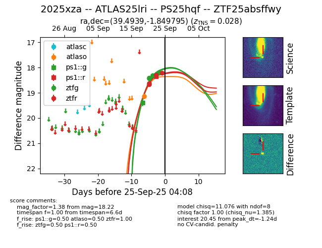
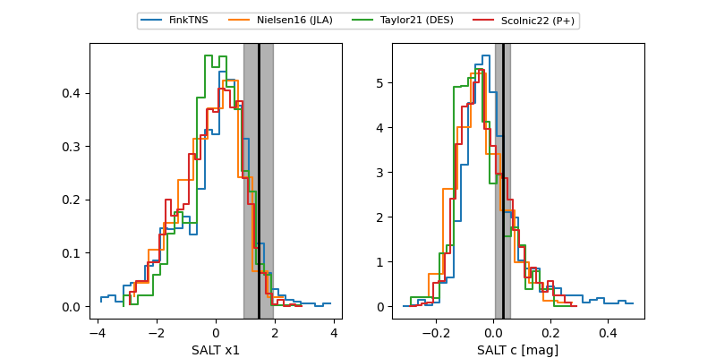

FINK: ZTF25absffwy
Lasair: ZTF25absffwy
ALeRCE: ZTF25absffwy
TNS: 2025xza
YSE: 2025xza
ZTF25absffwy (ztf,fink)
2025xza (tns,yse)
ATLAS25lri (atlas)
PS25hqf (panstarrs)
equatorial (ra, dec) = (39.4939,-1.84979)
galactic (l, b) = (172.7309,-54.08141)


last atlaso=19.14, ps1::g=19.39, ps1::r=18.35, ztfg=18.21, ztfr=18.22
1 atlaso, 1 ps1::g, 1 ps1::r, 5 ztfg, 4 ztfr detections